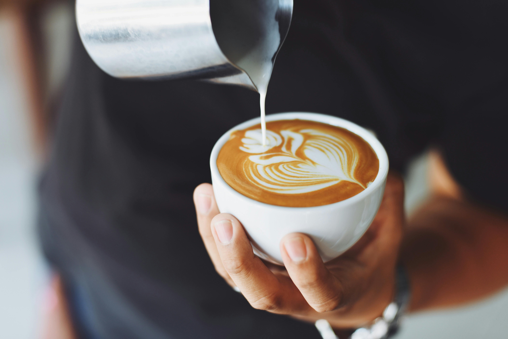
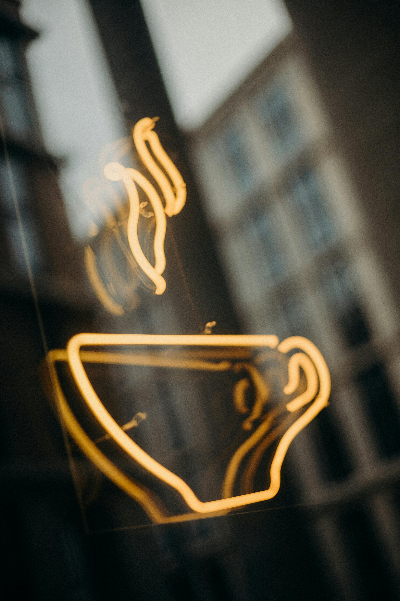

PROJETO DE CONCLUSÃO DO CURSO TÉCNICO · 2024
Café, carinho e boas histórias.
Conheça o Cafecat: nossa proposta de cafeteria temática, apresentada no TCM de 2024.
Conheça o nosso universo


.jpeg)
.jpeg)
✦ Pausa para um café♡ Amor pelos gatos✧ Sabores para descobrir↗ Histórias para compartilhar
ESCOLHA SUA PRÓXIMA PAUSA
Um sabor para cada momento.
Do primeiro gole ao último pedacinho.
Encontre seu próximo
favorito. Ver cardápio completo ↗
UMA PAUSA CLÁSSICA
.jpeg) DOÇURA & AFETO
UM PEDACINHO DE ALEGRIA
DOÇURA & AFETO
UM PEDACINHO DE ALEGRIA
.jpeg) DESACELERE UM POUCO
DESACELERE UM POUCO
Nenhum sabor encontrado.
Tente outra palavra ou escolha outra categoria.

MUITO ALÉM DA XÍCARA
Café aproxima.
Carinho transforma.
O Cafecat une duas paixões: café e gatos. Explore nossa história e conheça conteúdos sobre adoção e bem-estar felino.
Conheça a área de adoção ↗Explore o bem-estar felino →CONTINUE A EXPLORAR
Mais Cafecat para você.
Promoções ↗
Confira a página de ofertas do projeto.
02 / PARA COMPARTILHARPresentes ↗
Um toque de carinho para alguém especial.
IDENTIDADE VISUAL · ILLUSTRATOR
A revista do nosso TCM.
Conheça a revista Cafecat original, criada no Illustrator para o TCM de 2024.
PARA CONHECER MELHOR
Antes do próximo café…
Onde encontro os sabores do Cafecat?
Explore os cards de cafés, donuts, bolos e chás. A busca e os filtros ajudam a encontrar cada categoria.
Como salvo meus favoritos?
Toque no coração de uma categoria. Suas escolhas ficam salvas neste navegador, quando o armazenamento local está disponível.
Onde posso saber mais sobre adoção?
Acesse a página de adoção e conheça também os conteúdos de bem-estar felino.